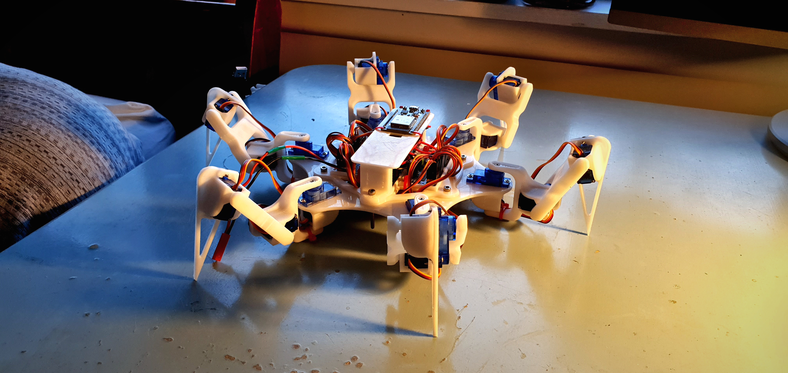
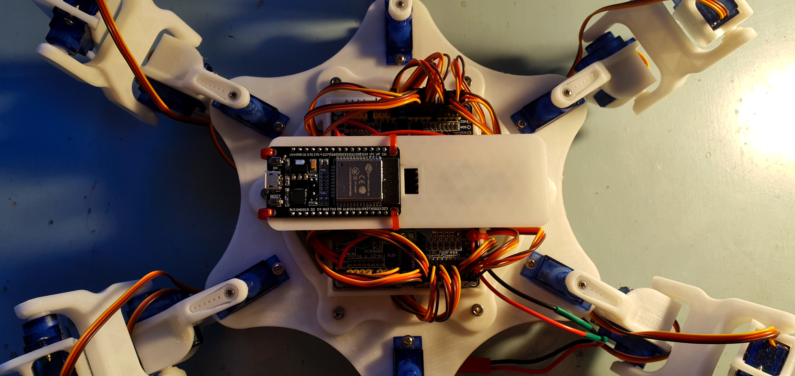

Mechanical Spider Robot
At the start of the year a watched a video online featuring a robotic spider. Instantly I new I wanted to create something similar of my own.
This project was going to require a large set of skills to complete, a lot of I didn't have at the time. Such as 3D modeling, 3D printing, electrical wiring and soldering and finally coding the micro controller to get the spider to walk. The project can be broken down into three categories or stages. The first being the design and prototyping phase, the second being electrical wiring, and finnally the coding coding phase. The coding phase ended up being the most difficuilt as controlling and coordinating 18 servos smoothely to animate a robot spider is more difficuilt that it may sound.
I decided apon constructing a six legged hexapod instead of a full eight legged spider to reduce cost as complexity. In each of the six legs there are three TG9z 9 gram hobby servos